CODING AGENTS AS PIXEL WORLD MODELS
traex/DeepSeek-V4.1-Flash · phygen_036
点击播放 · 原生 RGB 像素
逐轮保存的候选
回放视频、检查图与代码变化。
每份候选均可单独播放。实际图片检查记录在下方工具轨迹中。
候选 01播放与检查图
点击播放 · 原生 RGB 像素
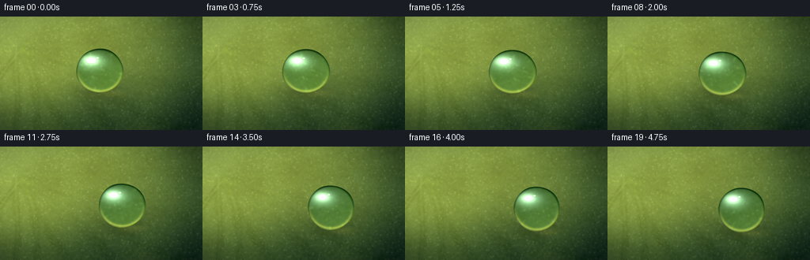
展开代码变化
--- 上一保存版本
+++ 本次保存版本
@@ -0,0 +1,281 @@
+"""Procedural macro video of a dew bead sliding across a lotus leaf."""
+
+from pathlib import Path
+
+import cv2
+import numpy as np
+from PIL import Image
+from scipy.ndimage import gaussian_filter
+
+from artifact_io import save
+
+
+CASE_DIR = Path(__file__).resolve().parent
+OUT_W, OUT_H = 256, 144
+FRAMES = 20
+FPS = 4.0
+SS = 4
+W, H = OUT_W * SS, OUT_H * SS
+TAU = np.pi * 2.0
+
+
+def smoothstep(edge0, edge1, value):
+ t = np.clip((value - edge0) / (edge1 - edge0), 0.0, 1.0)
+ return t * t * (3.0 - 2.0 * t)
+
+
+def normalized(array):
+ lo, hi = np.percentile(array, (1.0, 99.0))
+ return np.clip((array - lo) / max(float(hi - lo), 1e-6), 0.0, 1.0)
+
+
+def draw_tapered_polyline(layer, points, width, value, blur_sigma):
+ for index in range(1, len(points)):
+ t = index / (len(points) - 1)
+ local_width = max(1, int(round(width * (0.48 + 0.52 * (1.0 - t)))))
+ p0 = tuple(np.round(points[index - 1]).astype(int))
+ p1 = tuple(np.round(points[index]).astype(int))
+ cv2.line(layer, p0, p1, value, local_width, cv2.LINE_AA)
+ if blur_sigma:
+ layer[:] = gaussian_filter(layer, blur_sigma, mode="reflect")
+
+
+def make_leaf(rng):
+ yy, xx = np.mgrid[0:H, 0:W].astype(np.float32)
+ u, v = xx / W, yy / H
+
+ broad = normalized(gaussian_filter(rng.standard_normal((H, W)), 34 * SS, mode="reflect"))
+ medium = normalized(gaussian_filter(rng.standard_normal((H, W)), 7 * SS, mode="reflect"))
+ fine = normalized(gaussian_filter(rng.standard_normal((H, W)), 0.9 * SS, mode="reflect"))
+
+ key_light = (
+ 0.54
+ + 0.34 * np.exp(-(((u - 0.16) / 0.55) ** 2 + ((v - 0.24) / 0.43) ** 2))
+ - 0.16 * smoothstep(0.48, 1.0, v)
+ - 0.10 * smoothstep(0.70, 1.0, u)
+ )
+ key_light += 0.11 * (broad - 0.5) + 0.035 * (medium - 0.5)
+
+ shadow = np.array([0.035, 0.105, 0.082], dtype=np.float32)
+ green = np.array([0.175, 0.345, 0.165], dtype=np.float32)
+ sunlit = np.array([0.585, 0.625, 0.265], dtype=np.float32)
+ light = smoothstep(0.12, 0.88, key_light)[..., None]
+ rgb = shadow * (1.0 - light) + green * light
+ rgb = rgb * (1.0 - 0.72 * light) + sunlit * (0.72 * light)
+
+ warm_patch = smoothstep(0.25, 0.88, broad) * np.exp(-((u - 0.20) ** 2 / 0.32 + (v - 0.31) ** 2 / 0.20))
+ rgb += warm_patch[..., None] * np.array([0.050, 0.048, 0.003], dtype=np.float32)
+ rgb -= (medium[..., None] - 0.5) * np.array([0.035, 0.045, 0.030], dtype=np.float32)
+ rgb += (fine[..., None] - 0.5) * 0.035
+
+ # The leaf's radial architecture: raised veins with a fine dark edge.
+ vein_dark = np.zeros((H, W), dtype=np.float32)
+ vein_light = np.zeros((H, W), dtype=np.float32)
+ origin = np.array([0.10 * W, 0.28 * H], dtype=np.float32)
+ diagonal = float(np.hypot(W, H))
+ angles = np.deg2rad([-26, -13, 0, 13, 27, 42, 58, 76, 96, 118])
+ lengths = [1.22, 1.35, 1.50, 1.44, 1.30, 1.18, 1.08, 0.98, 0.88, 0.80]
+
+ for vein_index, (angle, length_scale) in enumerate(zip(angles, lengths)):
+ length = diagonal * length_scale
+ t = np.linspace(0.0, 1.0, 92)
+ bend = np.sin(t * np.pi * (0.75 + 0.12 * (vein_index % 3)) + vein_index * 0.71)
+ wiggle = 2.4 * SS * np.sin(t * 13.0 + vein_index * 1.3)
+ lateral = (0.030 * length * t**1.7 + bend * 5.0 * SS + wiggle) * (1 if vein_index % 2 else -1)
+ px = origin[0] + np.cos(angle) * length * t - np.sin(angle) * lateral
+ py = origin[1] + np.sin(angle) * length * t + np.cos(angle) * lateral
+ points = np.column_stack([px, py])
+
+ draw_tapered_polyline(vein_dark, points, int(5.0 * SS), 1.0, 1.2 * SS)
+ draw_tapered_polyline(vein_light, points, max(2, int(1.25 * SS)), 1.0, 0.65 * SS)
+
+ # Secondary veins split outward from the main ribs.
+ for branch_index, fraction in enumerate((0.20, 0.37, 0.56, 0.74)):
+ base_index = int(fraction * (len(points) - 1))
+ base = points[base_index]
+ tangent = points[min(base_index + 2, len(points) - 1)] - points[max(base_index - 2, 0)]
+ tangent /= max(float(np.linalg.norm(tangent)), 1e-4)
+ branch_length = length * (0.095 + 0.012 * branch_index)
+ side = -1.0 if (branch_index + vein_index) % 2 else 1.0
+ branch_angle = angle + side * np.deg2rad(25 + 5 * branch_index)
+ bt = np.linspace(0.0, 1.0, 32)
+ curve = side * 3.0 * SS * np.sin(bt * np.pi)
+ bx = base[0] + np.cos(branch_angle) * branch_length * bt - np.sin(branch_angle) * curve
+ by = base[1] + np.sin(branch_angle) * branch_length * bt + np.cos(branch_angle) * curve
+ branch = np.column_stack([bx, by])
+ draw_tapered_polyline(vein_dark, branch, max(1, int(1.15 * SS)), 0.72, 0.45 * SS)
+ draw_tapered_polyline(vein_light, branch, max(1, int(0.55 * SS)), 0.80, 0.30 * SS)
+
+ rgb += vein_light[..., None] * np.array([0.095, 0.115, 0.040], dtype=np.float32)
+ rgb -= vein_dark[..., None] * np.array([0.075, 0.085, 0.045], dtype=np.float32)
+
+ # Tiny wax crystals and water-catching points keep the surface tactile.
+ speckles = np.zeros((H, W), dtype=np.float32)
+ for _ in range(1900):
+ x = int(rng.integers(0, W))
+ y = int(rng.integers(0, H))
+ radius = int(rng.integers(1, max(2, int(1.3 * SS))))
+ cv2.circle(speckles, (x, y), radius, float(rng.uniform(0.25, 0.85)), -1, cv2.LINE_AA)
+ speckles = gaussian_filter(speckles, 0.42 * SS, mode="reflect")
+ rgb += speckles[..., None] * np.array([0.100, 0.105, 0.060], dtype=np.float32)
+
+ # Soft vignette and a narrow reflected-sky sheen at the upper-left.
+ radial = np.sqrt(((u - 0.47) / 0.76) ** 2 + ((v - 0.47) / 0.74) ** 2)
+ vignette = 1.0 - 0.28 * smoothstep(0.56, 1.18, radial)
+ rgb *= vignette[..., None]
+ sky = np.exp(-(((u - 0.03) / 0.27) ** 2 + ((v - 0.03) / 0.34) ** 2))
+ rgb += sky[..., None] * np.array([0.045, 0.060, 0.055], dtype=np.float32)
+
+ return np.clip(rgb, 0.0, 1.0).astype(np.float32)
+
+
+def bead_state(frame):
+ t = frame / (FRAMES - 1)
+ eased = 0.16 * t + 0.84 * (t * t * (3.0 - 2.0 * t))
+ cx = (126.0 + 45.0 * eased + 1.6 * np.sin(t * TAU * 0.72)) * SS
+ cy = (69.0 + 10.5 * eased - 1.1 * np.sin(t * TAU * 0.55 + 0.4)) * SS
+ breathing = 0.022 * np.sin(t * TAU * 0.82 + 0.2)
+ rx = 30.0 * (1.0 + breathing) * SS
+ ry = 28.2 * (1.0 - 0.55 * breathing) * SS
+ return cx, cy, rx, ry, t
+
+
+def sample_texture(texture, map_x, map_y):
+ return cv2.remap(
+ texture,
+ map_x.astype(np.float32),
+ map_y.astype(np.float32),
+ interpolation=cv2.INTER_CUBIC,
+ borderMode=cv2.BORDER_REFLECT_101,
+ )
+
+
+def render_frame(leaf, frame, rng):
+ cx, cy, rx, ry, t = bead_state(frame)
+ yy, xx = np.mgrid[0:H, 0:W].astype(np.float32)
+
+ # A restrained wet trail remains visible for a moment behind the bead.
+ trail = np.zeros((H, W), dtype=np.float32)
+ if frame > 0:
+ previous = [bead_state(i)[:2] for i in range(max(0, frame - 4), frame + 1)]
+ points = np.array(previous, dtype=np.int32)
+ cv2.polylines(trail, [points], False, 1.0, int(1.5 * SS), cv2.LINE_AA)
+ trail = gaussian_filter(trail, 2.4 * SS, mode="reflect")
+ trail *= np.exp(-((xx - cx) ** 2 + (yy - cy) ** 2) / (2.0 * (85 * SS) ** 2))
+
+ background = leaf.copy()
+ background += trail[..., None] * np.array([0.045, 0.055, 0.035], dtype=np.float32)
+
+ # Contact shadow and a small transmitted-light caustic beneath the drop.
+ shadow_x = (xx - (cx + 3.0 * SS)) / (rx * 1.16)
+ shadow_y = (yy - (cy + ry * 0.92)) / (ry * 0.50)
+ contact_shadow = np.exp(-(shadow_x**2 + shadow_y**2) * 1.8)
+ background *= (1.0 - 0.22 * contact_shadow[..., None])
+ caustic_xy = ((xx - (cx + rx * 0.42)) / (rx * 0.68)) ** 2 + (
+ (yy - (cy + ry * 1.02)) / (ry * 0.20)
+ ) ** 2
+ caustic = np.exp(-caustic_xy * 1.5)
+ background += caustic[..., None] * np.array([0.095, 0.085, 0.030], dtype=np.float32)
+
+ nx = (xx - cx) / rx
+ ny = (yy - cy) / ry
+ radius = np.sqrt(nx * nx + ny * ny)
+ angle = np.arctan2(ny, nx)
+ phase = t * TAU * 0.56
+ silhouette = (
+ 1.0
+ + 0.010 * np.sin(angle * 3.0 + phase)
+ + 0.006 * np.sin(angle * 5.0 - phase * 0.7 + 0.8)
+ )
+ shape_metric = radius / silhouette
+ alpha = smoothstep(1.0, 1.0 - 1.8 / min(rx, ry), shape_metric)
+ inside = shape_metric < 1.04
+
+ # A spherical water lens bends and lightly inverts the leaf pattern.
+ r2 = np.clip(shape_metric * shape_metric, 0.0, 1.0)
+ magnification = 0.58 + 0.18 * (1.0 - r2)
+ map_x = cx - nx * rx * magnification - 1.5 * SS * np.sin(phase)
+ map_y = cy - ny * ry * magnification + 2.0 * SS * np.cos(phase * 0.8)
+ refracted = sample_texture(background, map_x, map_y)
+
+ # Per-channel sampling produces a faint, physical edge dispersion.
+ refr_r = sample_texture(background, cx + (map_x - cx) * 1.018, cy + (map_y - cy) * 1.018)
+ refr_b = sample_texture(background, cx + (map_x - cx) * 0.983, cy + (map_y - cy) * 0.983)
+ refracted[..., 0] = refr_r[..., 0]
+ refracted[..., 2] = refr_b[..., 2]
+ refracted *= np.array([0.78, 0.96, 0.91], dtype=np.float32)
+
+ # Cool sky reflection across the upper-left hemisphere.
+ sky_reflection = np.exp(-(((nx + 0.34) / 0.54) ** 2 + ((ny + 0.42) / 0.34) ** 2))
+ refracted += sky_reflection[..., None] * np.array([0.34, 0.43, 0.44], dtype=np.float32)
+
+ # Broad softbox reflection plus two crisp window glints.
+ softbox = np.exp(-(((nx + 0.38) / 0.29) ** 2 + ((ny + 0.48) / 0.18) ** 2))
+ refracted += softbox[..., None] * np.array([0.50, 0.53, 0.49], dtype=np.float32)
+ glint_1 = np.exp(-(((nx + 0.38) / 0.105) ** 2 + ((ny + 0.49) / 0.055) ** 2) * 1.4)
+ glint_2 = np.exp(-(((nx + 0.09) / 0.042) ** 2 + ((ny + 0.58) / 0.027) ** 2) * 1.5)
+ refracted += (0.96 * glint_1 + 0.78 * glint_2)[..., None]
+
+ # Bright lower-right caustic and darker optical rim give the drop volume.
+ lower_rim = np.exp(-((radius - 0.94) / 0.075) ** 2) * smoothstep(-0.25, 0.90, ny)
+ upper_rim = np.exp(-((radius - 0.97) / 0.050) ** 2) * smoothstep(0.35, -0.85, ny)
+ refracted += lower_rim[..., None] * np.array([0.31, 0.27, 0.10], dtype=np.float32)
+ refracted -= upper_rim[..., None] * np.array([0.18, 0.17, 0.13], dtype=np.float32)
+ dark_ring = np.exp(-((radius - 0.985) / 0.045) ** 2)
+ refracted *= (1.0 - 0.25 * dark_ring[..., None])
+
+ # Very small lens imperfections make the surface feel wet rather than glassy.
+ micro = normalized(gaussian_filter(rng.standard_normal((H, W)), 0.7 * SS, mode="reflect"))
+ refracted += (micro[..., None] - 0.5) * 0.014 * inside[..., None]
+
+ rgb = background * (1.0 - alpha[..., None]) + np.clip(refracted, 0.0, 1.0) * alpha[..., None]
+
+ # Selective macro blur at the frame edge, then bloom and a soft highlight rolloff.
+ edge_distance = np.sqrt(((xx / W) - 0.50) ** 2 + ((yy / H) - 0.49) ** 2)
+ focus = 1.0 - smoothstep(0.30, 0.72, edge_distance)
+ blurred = cv2.GaussianBlur(rgb, (0, 0), 1.15 * SS)
+ rgb = rgb * (0.86 + 0.14 * focus[..., None]) + blurred * (0.14 * (1.0 - focus[..., None]))
+
+ bright = np.clip((rgb - 0.72) / 0.28, 0.0, 1.0)
+ bloom = cv2.GaussianBlur(bright, (0, 0), 8.0 * SS)
+ rgb += bloom * np.array([0.17, 0.15, 0.09], dtype=np.float32)
+
+ rgb = np.clip(rgb, 0.0, 1.0)
+ rgb = np.power(rgb, 0.92)
+ rgb = 0.5 + (rgb - 0.5) * 1.06
+ rgb = np.clip(rgb, 0.0, 1.0)
+ rgb += rng.normal(0.0, 0.006, (H, W, 1)).astype(np.float32)
+ return np.clip(rgb * 255.0 + 0.5, 0.0, 255.0).astype(np.uint8)
+
+
+def main():
+ rng = np.random.default_rng(2036)
+ leaf = make_leaf(rng)
+ frames = []
+ for frame_index in range(FRAMES):
+ large = render_frame(leaf, frame_index, rng)
+ frame = np.asarray(
+ Image.fromarray(large).resize((OUT_W, OUT_H), Image.Resampling.LANCZOS),
+ dtype=np.uint8,
+ )
+ frames.append(frame)
+ print(f"rendered {frame_index + 1:02d}/{FRAMES}", flush=True)
+
+ frames = np.stack(frames)
+ save(frames, CASE_DIR)
+
+ video_path = CASE_DIR / "preview.mp4"
+ writer = cv2.VideoWriter(
+ str(video_path),
+ cv2.VideoWriter_fourcc(*"mp4v"),
+ FPS,
+ (OUT_W, OUT_H),
+ )
+ for frame in frames:
+ writer.write(cv2.cvtColor(frame, cv2.COLOR_RGB2BGR))
+ writer.release()
+ print(f"saved {FRAMES} frames to {CASE_DIR}", flush=True)
+
+
+if __name__ == "__main__":
+ main()
候选 02播放与检查图
点击播放 · 原生 RGB 像素

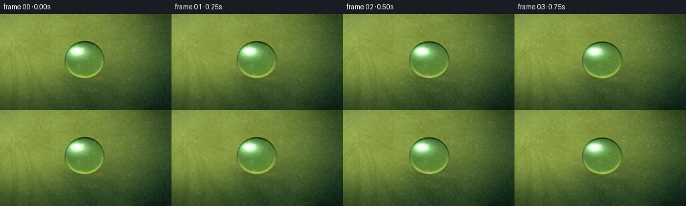
展开代码变化
--- 上一保存版本
+++ 本次保存版本
@@ -56,9 +56,9 @@
)
key_light += 0.11 * (broad - 0.5) + 0.035 * (medium - 0.5)
- shadow = np.array([0.035, 0.105, 0.082], dtype=np.float32)
- green = np.array([0.175, 0.345, 0.165], dtype=np.float32)
- sunlit = np.array([0.585, 0.625, 0.265], dtype=np.float32)
+ shadow = np.array([0.018, 0.052, 0.032], dtype=np.float32)
+ green = np.array([0.085, 0.235, 0.095], dtype=np.float32)
+ sunlit = np.array([0.440, 0.555, 0.190], dtype=np.float32)
light = smoothstep(0.12, 0.88, key_light)[..., None]
rgb = shadow * (1.0 - light) + green * light
rgb = rgb * (1.0 - 0.72 * light) + sunlit * (0.72 * light)
@@ -66,7 +66,27 @@
warm_patch = smoothstep(0.25, 0.88, broad) * np.exp(-((u - 0.20) ** 2 / 0.32 + (v - 0.31) ** 2 / 0.20))
rgb += warm_patch[..., None] * np.array([0.050, 0.048, 0.003], dtype=np.float32)
rgb -= (medium[..., None] - 0.5) * np.array([0.035, 0.045, 0.030], dtype=np.float32)
- rgb += (fine[..., None] - 0.5) * 0.035
+ rgb += (fine[..., None] - 0.5) * 0.045
+
+ # Small irregular surface cells form the waxy papillae visible on lotus leaves.
+ cell_size = 8 * SS
+ grid_y, grid_x = np.mgrid[0 : H + cell_size : cell_size, 0 : W + cell_size : cell_size]
+ point_x = grid_x + rng.uniform(0.14, 0.86, grid_x.shape) * cell_size
+ point_y = grid_y + rng.uniform(0.14, 0.86, grid_y.shape) * cell_size
+ cell_d1 = np.full((H, W), np.inf, dtype=np.float32)
+ cell_d2 = np.full((H, W), np.inf, dtype=np.float32)
+ for oy in (-1, 0, 1):
+ for ox in (-1, 0, 1):
+ gx = np.clip((xx // cell_size).astype(int) + ox, 0, point_x.shape[1] - 1)
+ gy = np.clip((yy // cell_size).astype(int) + oy, 0, point_y.shape[0] - 1)
+ distance = np.hypot(xx - point_x[gy, gx], yy - point_y[gy, gx])
+ closer = distance < cell_d1
+ cell_d2 = np.where(closer, cell_d1, np.minimum(cell_d2, distance))
+ cell_d1 = np.where(closer, distance, cell_d1)
+ cell_edge = np.clip((cell_d2 - cell_d1) / (2.1 * SS), 0.0, 1.0)
+ cell_center = 1.0 - smoothstep(0.02, 0.55, cell_edge)
+ rgb += cell_center[..., None] * np.array([0.022, 0.030, 0.008], dtype=np.float32)
+ rgb -= (1.0 - cell_edge[..., None]) * np.array([0.018, 0.024, 0.014], dtype=np.float32)
# The leaf's radial architecture: raised veins with a fine dark edge.
vein_dark = np.zeros((H, W), dtype=np.float32)
@@ -106,8 +126,8 @@
draw_tapered_polyline(vein_dark, branch, max(1, int(1.15 * SS)), 0.72, 0.45 * SS)
draw_tapered_polyline(vein_light, branch, max(1, int(0.55 * SS)), 0.80, 0.30 * SS)
- rgb += vein_light[..., None] * np.array([0.095, 0.115, 0.040], dtype=np.float32)
- rgb -= vein_dark[..., None] * np.array([0.075, 0.085, 0.045], dtype=np.float32)
+ rgb += vein_light[..., None] * np.array([0.125, 0.150, 0.045], dtype=np.float32)
+ rgb -= vein_dark[..., None] * np.array([0.110, 0.125, 0.060], dtype=np.float32)
# Tiny wax crystals and water-catching points keep the surface tactile.
speckles = np.zeros((H, W), dtype=np.float32)
@@ -117,12 +137,30 @@
radius = int(rng.integers(1, max(2, int(1.3 * SS))))
cv2.circle(speckles, (x, y), radius, float(rng.uniform(0.25, 0.85)), -1, cv2.LINE_AA)
speckles = gaussian_filter(speckles, 0.42 * SS, mode="reflect")
- rgb += speckles[..., None] * np.array([0.100, 0.105, 0.060], dtype=np.float32)
+ rgb += speckles[..., None] * np.array([0.090, 0.105, 0.045], dtype=np.float32)
+
+ # A few distant micro-droplets catch tiny pinpoints of light.
+ for _ in range(15):
+ x = int(rng.integers(5 * SS, W - 5 * SS))
+ y = int(rng.integers(5 * SS, H - 5 * SS))
+ radius = int(rng.uniform(0.7, 1.8) * SS)
+ cv2.circle(rgb, (x, y), radius, (0.10, 0.19, 0.09), -1, cv2.LINE_AA)
+ cv2.circle(rgb, (x, y), radius, (0.34, 0.43, 0.27), max(1, radius // 4), cv2.LINE_AA)
+ cv2.circle(
+ rgb,
+ (x - max(1, radius // 3), y - max(1, radius // 3)),
+ max(1, radius // 4),
+ (0.72, 0.78, 0.65),
+ -1,
+ cv2.LINE_AA,
+ )
# Soft vignette and a narrow reflected-sky sheen at the upper-left.
radial = np.sqrt(((u - 0.47) / 0.76) ** 2 + ((v - 0.47) / 0.74) ** 2)
vignette = 1.0 - 0.28 * smoothstep(0.56, 1.18, radial)
rgb *= vignette[..., None]
+ rgb[..., 0] *= 0.90
+ rgb[..., 2] *= 0.92
sky = np.exp(-(((u - 0.03) / 0.27) ** 2 + ((v - 0.03) / 0.34) ** 2))
rgb += sky[..., None] * np.array([0.045, 0.060, 0.055], dtype=np.float32)
@@ -203,24 +241,24 @@
refr_b = sample_texture(background, cx + (map_x - cx) * 0.983, cy + (map_y - cy) * 0.983)
refracted[..., 0] = refr_r[..., 0]
refracted[..., 2] = refr_b[..., 2]
- refracted *= np.array([0.78, 0.96, 0.91], dtype=np.float32)
+ refracted *= np.array([0.67, 0.90, 0.80], dtype=np.float32)
# Cool sky reflection across the upper-left hemisphere.
sky_reflection = np.exp(-(((nx + 0.34) / 0.54) ** 2 + ((ny + 0.42) / 0.34) ** 2))
- refracted += sky_reflection[..., None] * np.array([0.34, 0.43, 0.44], dtype=np.float32)
+ refracted += sky_reflection[..., None] * np.array([0.19, 0.27, 0.28], dtype=np.float32)
# Broad softbox reflection plus two crisp window glints.
softbox = np.exp(-(((nx + 0.38) / 0.29) ** 2 + ((ny + 0.48) / 0.18) ** 2))
- refracted += softbox[..., None] * np.array([0.50, 0.53, 0.49], dtype=np.float32)
- glint_1 = np.exp(-(((nx + 0.38) / 0.105) ** 2 + ((ny + 0.49) / 0.055) ** 2) * 1.4)
- glint_2 = np.exp(-(((nx + 0.09) / 0.042) ** 2 + ((ny + 0.58) / 0.027) ** 2) * 1.5)
- refracted += (0.96 * glint_1 + 0.78 * glint_2)[..., None]
+ refracted += softbox[..., None] * np.array([0.31, 0.35, 0.31], dtype=np.float32)
+ glint_1 = np.exp(-(((nx + 0.38) / 0.080) ** 2 + ((ny + 0.49) / 0.040) ** 2) * 1.4)
+ glint_2 = np.exp(-(((nx + 0.09) / 0.034) ** 2 + ((ny + 0.58) / 0.022) ** 2) * 1.5)
+ refracted += (0.99 * glint_1 + 0.84 * glint_2)[..., None]
# Bright lower-right caustic and darker optical rim give the drop volume.
lower_rim = np.exp(-((radius - 0.94) / 0.075) ** 2) * smoothstep(-0.25, 0.90, ny)
upper_rim = np.exp(-((radius - 0.97) / 0.050) ** 2) * smoothstep(0.35, -0.85, ny)
- refracted += lower_rim[..., None] * np.array([0.31, 0.27, 0.10], dtype=np.float32)
- refracted -= upper_rim[..., None] * np.array([0.18, 0.17, 0.13], dtype=np.float32)
+ refracted += lower_rim[..., None] * np.array([0.26, 0.23, 0.070], dtype=np.float32)
+ refracted -= upper_rim[..., None] * np.array([0.15, 0.15, 0.11], dtype=np.float32)
dark_ring = np.exp(-((radius - 0.985) / 0.045) ** 2)
refracted *= (1.0 - 0.25 * dark_ring[..., None])
候选 03播放与检查图
点击播放 · 原生 RGB 像素

展开代码变化
代码未变化；重新保存了产物。
候选 04播放与检查图
点击播放 · 原生 RGB 像素
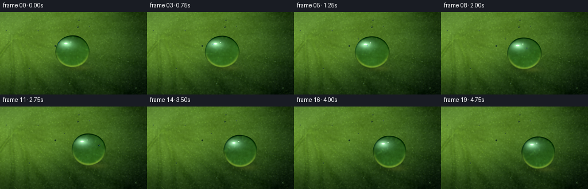
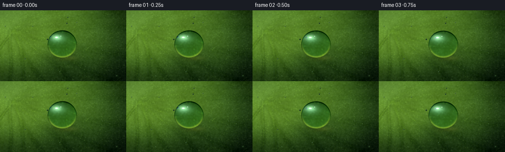
展开代码变化
--- 上一保存版本
+++ 本次保存版本
@@ -208,12 +208,12 @@
shadow_x = (xx - (cx + 3.0 * SS)) / (rx * 1.16)
shadow_y = (yy - (cy + ry * 0.92)) / (ry * 0.50)
contact_shadow = np.exp(-(shadow_x**2 + shadow_y**2) * 1.8)
- background *= (1.0 - 0.22 * contact_shadow[..., None])
+ background *= (1.0 - 0.34 * contact_shadow[..., None])
caustic_xy = ((xx - (cx + rx * 0.42)) / (rx * 0.68)) ** 2 + (
(yy - (cy + ry * 1.02)) / (ry * 0.20)
) ** 2
caustic = np.exp(-caustic_xy * 1.5)
- background += caustic[..., None] * np.array([0.095, 0.085, 0.030], dtype=np.float32)
+ background += caustic[..., None] * np.array([0.145, 0.130, 0.040], dtype=np.float32)
nx = (xx - cx) / rx
ny = (yy - cy) / ry
@@ -231,7 +231,7 @@
# A spherical water lens bends and lightly inverts the leaf pattern.
r2 = np.clip(shape_metric * shape_metric, 0.0, 1.0)
- magnification = 0.58 + 0.18 * (1.0 - r2)
+ magnification = 0.42 + 0.26 * (1.0 - r2)
map_x = cx - nx * rx * magnification - 1.5 * SS * np.sin(phase)
map_y = cy - ny * ry * magnification + 2.0 * SS * np.cos(phase * 0.8)
refracted = sample_texture(background, map_x, map_y)
@@ -241,23 +241,24 @@
refr_b = sample_texture(background, cx + (map_x - cx) * 0.983, cy + (map_y - cy) * 0.983)
refracted[..., 0] = refr_r[..., 0]
refracted[..., 2] = refr_b[..., 2]
- refracted *= np.array([0.67, 0.90, 0.80], dtype=np.float32)
+ refracted *= np.array([0.63, 0.84, 0.72], dtype=np.float32)
+ refracted *= (1.0 - 0.18 * r2[..., None])
# Cool sky reflection across the upper-left hemisphere.
sky_reflection = np.exp(-(((nx + 0.34) / 0.54) ** 2 + ((ny + 0.42) / 0.34) ** 2))
- refracted += sky_reflection[..., None] * np.array([0.19, 0.27, 0.28], dtype=np.float32)
+ refracted += sky_reflection[..., None] * np.array([0.12, 0.19, 0.20], dtype=np.float32)
# Broad softbox reflection plus two crisp window glints.
softbox = np.exp(-(((nx + 0.38) / 0.29) ** 2 + ((ny + 0.48) / 0.18) ** 2))
- refracted += softbox[..., None] * np.array([0.31, 0.35, 0.31], dtype=np.float32)
+ refracted += softbox[..., None] * np.array([0.22, 0.26, 0.22], dtype=np.float32)
glint_1 = np.exp(-(((nx + 0.38) / 0.080) ** 2 + ((ny + 0.49) / 0.040) ** 2) * 1.4)
glint_2 = np.exp(-(((nx + 0.09) / 0.034) ** 2 + ((ny + 0.58) / 0.022) ** 2) * 1.5)
- refracted += (0.99 * glint_1 + 0.84 * glint_2)[..., None]
+ refracted += (1.00 * glint_1 + 0.86 * glint_2)[..., None]
# Bright lower-right caustic and darker optical rim give the drop volume.
lower_rim = np.exp(-((radius - 0.94) / 0.075) ** 2) * smoothstep(-0.25, 0.90, ny)
upper_rim = np.exp(-((radius - 0.97) / 0.050) ** 2) * smoothstep(0.35, -0.85, ny)
- refracted += lower_rim[..., None] * np.array([0.26, 0.23, 0.070], dtype=np.float32)
+ refracted += lower_rim[..., None] * np.array([0.33, 0.29, 0.080], dtype=np.float32)
refracted -= upper_rim[..., None] * np.array([0.15, 0.15, 0.11], dtype=np.float32)
dark_ring = np.exp(-((radius - 0.985) / 0.045) ** 2)
refracted *= (1.0 - 0.25 * dark_ring[..., None])
候选 05播放与检查图

可观测工具轨迹
实际执行的命令与返回图片。
命令 1exit 0
/bin/bash -c "pwd && rg --files -g 'prompt.txt' -g 'GENERATION_RULES.md' -g 'task_spec.json' -g '"'!node_modules'"'"
命令 2exit 0
/bin/bash -c 'git status --short && ls -la'
命令 3exit 0
/bin/bash -c 'cat prompt.txt'
命令 4exit 0
/bin/bash -c 'cat GENERATION_RULES.md'
命令 5exit 0
/bin/bash -c "cat task_spec.json && sed -n '1,240p' artifact_io.py"
命令 6exit 0
/bin/bash -c 'which ffmpeg || true; which convert || true; df -h . | tail -1'
命令 7exit 0
/bin/bash -c "python - <<'PY'
import numpy, PIL
print('numpy', numpy.__version__)
print('PIL', PIL.__version__)
try:
import scipy; print('scipy', scipy.__version__)
except Exception as e: print('scipy unavailable')
try:
import cv2; print('cv2', cv2.__version__)
except Exception as e: print('cv2 unavailable')
PY"命令 8exit 0
/bin/bash -c 'python generate.py'
命令 9exit 0
/bin/bash -c 'python generate.py'
命令 10exit 0
/bin/bash -c "python - <<'PY'
from PIL import Image
im=Image.open('frames/10.png')
im.crop((92,24,220,132)).resize((768,648), Image.Resampling.NEAREST).save('.tmp/bead_crop.png')
PY"命令 11exit 0
/bin/bash -c "python - <<'PY'
from PIL import Image
im=Image.open('frames/00.png')
im.crop((82,18,208,126)).resize((756,648), Image.Resampling.NEAREST).save('.tmp/bead_crop0.png')
PY"命令 12exit 0
/bin/bash -c 'python generate.py'
命令 13exit 0
/bin/bash -c "python - <<'PY'
from pathlib import Path
import numpy as np
from PIL import Image
import cv2
root = Path('.')
pixels = np.load(root / 'pixels.npz')['pixels']
print('pixels.npz:', pixels.shape, pixels.dtype, 'min/max', int(pixels.min()), int(pixels.max()))
frames = sorted((root / 'frames').glob('*.png'))
print('PNG frames:', len(frames), 'first/last', frames[0].name, frames[-1].name)
for p in (frames[0], frames[-1]):
with Image.open(p) as im:
print(p.name, im.size, im.mode)
cap = cv2.VideoCapture(str(root / 'preview.mp4'))
print('MP4:', int(cap.get(cv2.CAP_PROP_FRAME_WIDTH)), 'x', int(cap.get(cv2.CAP_PROP_FRAME_HEIGHT)), 'frames', int(cap.get(cv2.CAP_PROP_FRAME_COUNT)), 'fps', cap.get(cv2.CAP_PROP_FPS))
cap.release()
print('index.html bytes:', (root / 'index.html').stat().st_size)
print('inspection.png:', Image.open(root / 'inspection.png').size)
PY"命令 14exit 0
/bin/bash -c "python - <<'PY'
import numpy as np
from PIL import Image
from pathlib import Path
frames=np.stack([np.asarray(Image.open(p).convert('RGB'), dtype=np.float32) for p in sorted(Path('frames').glob('*.png'))])
d=np.abs(np.diff(frames,axis=0))
print('frame-delta mean: %.3f p99: %.1f max: %.1f' % (d.mean(), np.percentile(d,99), d.max()))
# Centroid of bright bead highlights tracks left-to-right motion.
for i in (0,5,10,15,19):
f=frames[i]
mask=(f[...,0]>210)&(f[...,1]>210)&(f[...,2]>200)
yy,xx=np.nonzero(mask)
print(i, 'highlight centroid', round(float(xx.mean()),2), round(float(yy.mean()),2), 'count', len(xx))
PY
git status --short -- ."命令 15exit 0
/bin/bash -c 'ls -lh generate.py pixels.npz index.html inspection.png transition_check.png preview.mp4 && git status --short -- .'
视觉工具实际返回图片 1

视觉工具实际返回图片 2
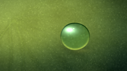
视觉工具实际返回图片 3

视觉工具实际返回图片 4
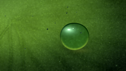
视觉工具实际返回图片 5
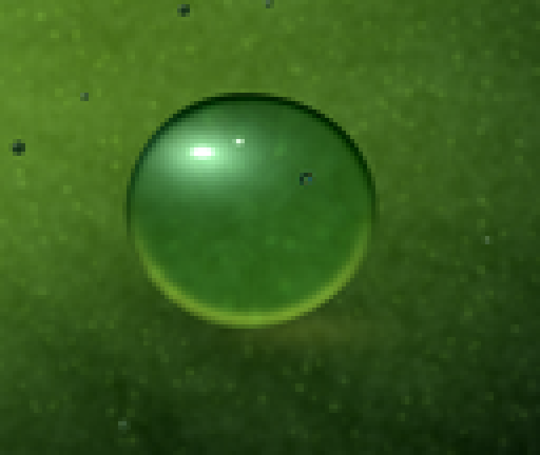
视觉工具实际返回图片 6
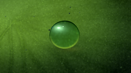
视觉工具实际返回图片 7
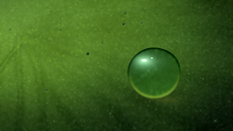
视觉工具实际返回图片 8
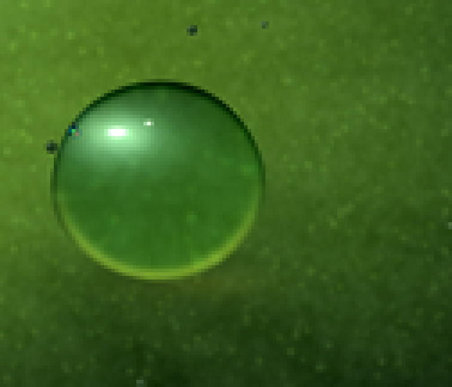
视觉工具实际返回图片 9
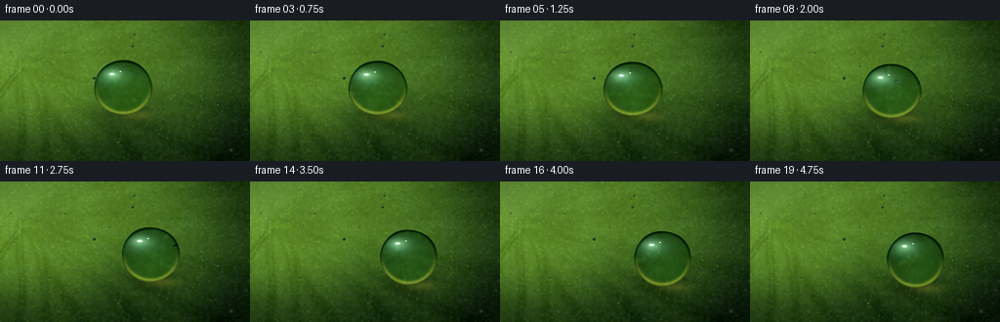
视觉工具实际返回图片 10
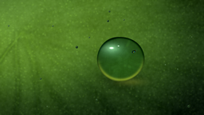
保存候选 5 份；完成命令 15 次；可验证图片返回 10 张。原始 API 响应与完整日志保留在本地。